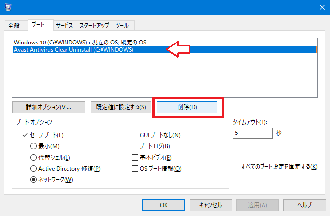

Avast をアンインストールするための「Avast Clear」がアンインストールできなくて苦戦した
Avast Passwords が便利なので、Avast のアンチウイルス系のコンポーネントはインストールせずに Avast Passwords 部分のみ使っている。
メインのアンチウイルスソフトは「ウイルスバスター」を使っているので、ウイルスバスターを更新する時に Avast をアンインストールする必要があった。
しかし、どうにもこうにも、Avast のアンインストールが上手くいかない。「プログラムの追加と削除」から削除しても変にゴミが残ったり、ようやくアンインストールできたかと思えば再インストールが成功しない状態になってしまった。
そこで色々調べていたところ、Avast Clear という公式のアンインストールツールが存在することが分かった。公式がココまでしないとアンインストールできないのかよ…。
- 参考 : アバスト アンインストール ユーティリティ | aswClear のダウンロード
- 参考 : Avast Clear｜フリーダウンロード｜使い方 | ソフタロウ
- 参考 : 【レビュー】「アバスト」をシステムから完全に削除できる公式ツール「Avast Clear」 - 窓の杜
Avast のツール類は「管理者として実行」で動かすのが鉄則。じゃないとたいてい失敗する。Avast Clear を管理者権限で実行してインストールすると、セーフモードで再起動することになり、そこで Avast のアンインストールが行われた。
これでようやくまっさらに削除できたか、と思ったが、その後 PC を起動する度に、
- Windows 10
- Avast Clear Uninstall
のどちらを起動するか、という OS 選択画面みたいなのが必ず表示されるようになってしまった。
アンインストーラがアンインストールできなくなるというまさかの事態で困っていたが、以下の文献に対処法が書かれていた。
- スタートメニュー -> すべてのプログラム -> アクセサリ -> ファイル名を指定して実行 を起動
- msconfig と入力して「システム構成」ユーティリティを呼び出す
- 「ブート」タブから「Windows 7」を選び、「既定に設定する」をクリック
- 「Avast Clear Uninstall」を選択し、「削除」をクリック
- 「OK」をクリックし、PCを再起動
このとおり、msconfig の「ブート」欄から「Avast Clear Uninstall」を削除することで解決できた。

Avast しつこすぎる…